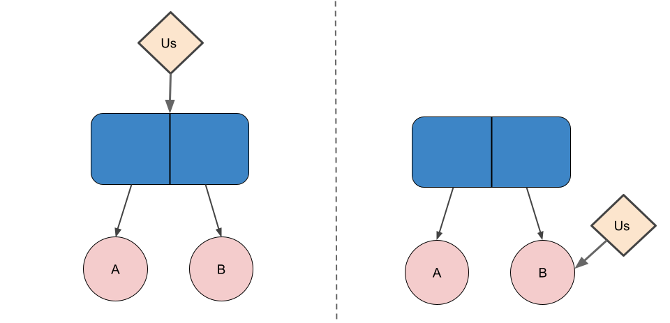

Initially Published: 2022-05-02
Last Modified: 2022-05-05
The next article in this series will describe how Amlang is both a database for a language and a language for a database, and more broadly how it's an intersection of language, database, and simulation systems. At the heart of this matter―and one of the distinguishing characteristics of Amlang―is the Environment. It's highly recommended to have read Part 0: Background of this series before reading this part.
An S-expression
is either a primitive (e.g. integer, string, array, hash table,
etc), or a cons
cell (an ordered pair of
S-expression references,
where the first and second elements are
called
From this perspective, cons cells are a means of gluing together component S-exps. Importantly, as an ordered pair of references to component S-exps, this glue only works in one direction. From the perspective of a cons cell, there is some relation between its component S-exps, but from the perspective of either of the components, there is no obvious link between it and the other component. This also means that cons cells allow for building on top of existing components without needing to modify or move them.
Figure 1: On the left, we can see the link between A & B. On the right, we cannot.
In addition, cons cells can be connected in different configurations in order to glue together more than just two components. However, because the components themselves may also be cons cells, the "viewer" must already know the structure of the glue (how the top-level cons cells are configured) in order to distinguish the glue from the components being glued. Indeed, there isn't inherently one way to distinguish between the glue and the components; an S-exp can be seen as an atomic unit or as various configurations and levels of glue & components.
We can construct the idea of a (A . B) and shorten a list's
textual representation from (A . (B . (C
. NIL))) to (A B C). Look
at how the text and structure
of this
S-exp compare. By extending the notion of lists to
include (A B C . D)), we can represent
all S-exps as lists of S-exps (in many Lisps, this can be used to
create cycles by D being a reference to an earlier part of the
S-exp). Continuing with the idea of looking at S-exps in different
ways, this means we can consider an S-exp as either a primitive or
cons, or as a primitive or list. In a
sense, (A . (B . (C . D)))
and (A B C . D) textually
represent these two views.
Lisps represent not only "normal data", but also Lisp code itself
as S-exps (making the
languages homoiconic).
The default expectation of a Lisp interpreter is for code to be a
list where, when all elements are evaluated individually, the
first element is a function and remaining elements are function
arguments; take a look at (* (+ 1 2) (+
3 4) 5). Indeed, the name "Lisp" stands for "list
processor" and comes from this view of the interpreter. "Syntax"
is any deviation from using plain lists to distinguish between
glue and components (like (let ((NAME1
VAL1) (NAME2 VAL2) ...) INNER_CODE)), and "special forms"
are syntax + associated special processing rules
(in (if PREDICATE A B), only one
of A or B should be evaluated).
In a sense, even the data and code created by Lisp programmers are just syntax and special form processing within their own contexts. The interface of a function is a model of specific computation, where the function name (say, "geometric-mean") represents this limited context of specific computation. The Lisp language just happens to be a built-in, top-level set of syntax and special forms that―as with all general-purpose languages―acts as both a model and metamodel of code (i.e. allows both for the creation of code according to the built-in model of computation, and for the creation of new models of computation using the built-in model of computation). This is a useful model of Turing completeness. Since a Universal Turing machine can simulate any Turing machine, its input represents a model of recursively enumerable languages; since the Turing machine being simulated may itself be a different Universal Turing machine, all Universal Turing machines (and all Turing-complete models of computation) can act as both models and metamodels of recursively enumerable languages. A Turing machine which is not universal may still permit some limited form of metamodeling (whether as a general metamodel for a grammar type higher in the Chomsky hierarchy or as a more limited kind of metamodel), or it may indeed be only usable as a direct model of computation.
A useful model of developing an exploit is as finding a way to use a component's model of specific computation (i.e. its interface) as a metamodel that can be used to produce different types of computation than the component was designed for. In this sense, a key aspect of secure programming is reducing the ability for models of computation to inadvertently serve as metamodels of computation. However, while some exploits may directly use an interface as a metamodel (think of a really straightforward code injection), exploits tend to take advantage of details below the top-level interface, like of:
Some examples of using top-level application interfaces as a metamodel (i.e. finding a different model of computation and "compiling down" uses of that new model to the original top-level interface):
This relates to the fact that "hacker" tends to be used both in a general sense and in more specific manner. The broader sense of "hacker" is someone who uses computers (or more broadly any tool) to achieve novel and clever outcomes, and often approaches the task with a sense of curiosity and exploration. Apathy, disinterest, or belief that most interesting problems have already been solved are ethoses most antithetical to the hacker mindset. The general term of "hacker" can be put into perspective by recognizing that the language system being used (whether processor, interpreter, compiler, or some combination/tower) is likely general and explicitly designed to be both model and metamodel of computation. By focusing instead on systems that explicitly try not to behave as metamodels and only serve a specific, limited purpose, we arrive at the more limited (but more popularly recognized) sense of the word "hacker". The author would argue that hackers in both senses of the word are essential to the Free Software movement.
From the above discussion, we can see that the genesis of "hacking" in the more limited & popular sense of the word is exploitation. However, out of the seed of exploitation has grown the vast fields of cybersecurity and cyberwarfare―covering such topics as reconnaissance, post-exploitation, stealth, social engineering, perimeter defense, observability & monitoring, principle of least privilege, defense-in-depth, and much more―with tactical, operational, and strategic considerations. On the other hand, without an understanding of exploitation, the tapestry of cybersecurity will always seem vague and nebulous, with dogma serving to obscure this formlessness. Simply due to their nature, blue teams tend to be more susceptible to this than red teams.
An important note is that representing Lisp code as S-exps does not mean Lisp code must be S-exps. In modern Lisps, metaprogramming is achieved through the use of macros―which treat their input (Lisp code) as S-exps and can modify them how they like―but must be evaluated by a certain point in the "compilation" of the code. After this stage, the language system can compile down into bytecode or machine code like any other language. What the S-exp representation of Lisp code enables is the use of Lisp to create & modify Lisp in an elegant manner that clearly reflects normal Lisp programming (although metaprogramming inherently demands higher cognitive load), whereas other languages tend to use either a different metaprogramming language (e.g. C macros, C++ templates, Rust macro_rules), the same language in a different context that requires much specialized knowledge (e.g. Rust procedural macros), or the same language in a greatly constrained context (e.g. C++ constexpr, Rust const). Prior to the use of macros for metaprogramming, early Lisps used fexpr, which is similar to macros but can be used for metaprogramming at any point in runtime rather than only during compile-time. Nowadays, fexpr-like features tend to be associated with highly reflective systems like 3-Lisp rather than mainstream language systems. With that said, even fexpr-like behavior does not mandate a permanent S-exp representation of code; if any representation of some code (whether persisted IR, a final compiled representation, or a mix of both) can reproduce an S-exp representation on-demand, that code can be applied to an fexpr without needing to always be an S-exp.
Before we end our tour of S-exps, note that the "S" in "S-exp" stands for symbolic. That is, traditionally S-exps have been used in contexts (like Lisps) where symbols―as a unique ID and an associated name―played a key role in their use (i.e. where the language system centers meaning around symbol tables). From the author's perspective, this has long been a limitation of Lisps because symbols are tailored towards human users rather than the language system itself. Humans dictating the behavior of a software system does not preclude the use of software in achieving that goal; in fact, it is the very nature of language systems to be software which creates software, and a lens of AI is as the logical conclusion of this path. From this perspective, symbols as ID + name are a limitation because the semantics & semantical context of the associated name are implicit to the language system. This is especially true because symbols tend to be connected through their names―which hides those connections from the language system (e.g. how are "arithmetic-mean" and "geometric-mean" related, or "ReplicaSet" and "Pod"?)―and because symbols actually encapsulate important semantics. If we could arbitrarily change symbol names without changing the meaning of the code (considering not only execution of final, "compiled" representations, but also the process of creating/modifying that code), the above points wouldn't quite matter. Note that none of this is an argument against the use of symbols, but rather an argument against using symbols as fundamental to a language system rather than as a convenience for humans.
Let's begin by considering
a graph
as a set of vertices (also called nodes), and a set of edges
(ordered or unordered pairs of vertices). Graphs use local
connections to produce global structures of incredible variety,
and are the central model upon
which graph
theory
and network
science are built. Graphs can also be used to represent
knowledge/information, which is the purview
of graph
databases. However, when representing information, we are
often not only concerned with whether two
nodes/concepts/models/etc are connected, but also how they
are connected. This leads us to extending the idea of an edge from
a pair of nodes to a
This idea of taking graphs
and reifying
edges produces a structure we call a (antonym antonym
synonym), antonym acts as both "vertex" and "edge". It's
worth noting that we could contrive various manners of "compiling
down" a triplestore into a database implemented with edges rather
than triples (i.e. the systems
have bisimulation).
This allows for graph theory to still be relevant (think
of denotational
semantics), but different implementations would excel at very
different kinds of workloads.
As a first approximation, we could look at the Environment as a
metagraph where Nodes may contain Structures (S-exps). In a sense,
a Node containing a Structure is an abstraction of the Structure,
like symbols are in Lisps. A Node containing a Structure is
referred to as
In this way, Nodes can be parts of the metagraph―connected
by triples―or parts of Structures within or external to the
metagraph, connected by cons cells or any aggregate primitive
types (arrays, hash tables, etc). Since the Structures within the
metagraph may themselves refer to different parts of the
metagraph, the result is less like a plane of triple-connected
nodes containing isolated Structures, and more like a spherical
shell of triple-connected nodes that are internally interconnected
by Structures built on top of each other (just an analogy of
course; the metagraph alone need not
be planar).
We thus refer to the Environment as a
Finally, triples in the Environment are also a kind of Node.
Conceptually, one can think of triples as a specific kind of
structured Node, whose Structure is treated specially by the
underlying Amlang implementation and
the Environment
interface. With triples as Nodes, we can make triples about
triples, like ((Earth is flat)
provenance random-blogger-27). In a sense, making triples a
kind of Node provides a recursive step for reifying the graph
structure, where moving from edges to triples was a base step in
reifying the graph structure. To put in another way, to the degree
that triples represent knowledge (whether through local
connections alone or global structure holistically) reifying
triples as Nodes allows for knowledge-about-knowledge, both in the
form of Structure and metagraph. This same reification could be
achieved just by making edges (pairs) as a kind of Node, but as
stated earlier, triples are a more convenient model when we care
not only about whether Nodes are related but also about how.
We can look at the fundamental models provided by an operating system as process and filesystem. Let's begin with a very simplified model of a computer:
Process allows for each application to act as though it has exclusive access to both CPU and RAM; the scheduler allows for multiple processes to be served by a single CPU, and virtual memory allows for all of the processes's "RAM" to be served by the single line of physical RAM (and perhaps backed by the hard drive). On the other hand, filesystems model the line of bytes in a hard drive as a directory structure (a hierarchy of directories and files of arbitrary size). This is the core of what an OS kernel is, with drivers to take care of the fact that the kernel's model of computer hardware is not the actual interface provided by the underlying hardware/firmware.
We might say that the purpose of the OS is to abstract hardware and provide a model of computers more suited to the kinds of tasks we want to do with them. Language systems fit into this picture primarily to abstract away two more details:
Language systems do this by providing a set of computational and storage primitives―as well as ways to combine these primitives―in a manner that to some degree insulates project implementations from hardware & OS details and facilitates particular kinds of tasks. While modeling both computation and storage is the nature of all language systems, there has historically been something of a bifurcation in the field of study and industry, where remodeling computation is seen as more the purview of programming languages and remodeling storage as more the purview of database systems. This bifurcation might be justified by viewing the focus of databases as data scale and querying within the context of a particular consistency model, and the focus of programming languages as type systems, metaprogramming, and maintaining universality. Particularly before the breakdown of Dennard scaling around 2006 and the inexorable rise of concurrency in mainstream software development, it was possible to skirt issues of consistency within a programming language and use databases as the provider of consistency when necessary (think of web applications). Beyond the modern reality of programming languages needing sane and standardized consistency models however, we will argue in the next article that bifurcating language systems into programming languages and databases is unproductive and causes problems for developing the field of language systems.
Triples and cons cells are both a form of glue between components. In triples, the components being glued are always Nodes (although the Nodes may be structured), whereas cons cells glue together Structures (although the Structures might be or contain Nodes). As discussed in the earlier section on S-exps, cons cells are a uni-directional relation; only from the perspective of the cons does the relation exist. On the other hand, triples are a quad-directional relation, where the relation is available from subject, predicate, object, and triple itself. This would be a tri-directional relation if triples weren't reified in the Environment; the triple direction is essentially in the direction of meta-knowledge.
It's worth looking at Metagraph > Structure > Array as models of storage providing a hierarchy of flexibility and inverse hierarchy of performance. Triples as a glue are very flexible and expressive, but are also clearly quite removed from the underlying model of memory. In a somewhat less expressive and multivalent context, S-exps are a perfectly fine representation of information, with cons cells still enabling much dynamism and facilitating prototyping. Finally, arrays essentially provide the same model of storage as does the kernel, handing off a line of bytes. One might consider how the flexible process of prototyping a class's interface and members in source code compiles down into an array of function pointers and array of members & padding as part of the ABI, or how the relational model of data requires developers to mentally "compile down" their data model into arrays. A key principle of Amlang is the ability to both collapse and reproduce the context that provides semantics for a particular Structure―whether in metagraph, S-exp, or array―although we defer this to the next article.
Since machine code represents code & data as bytes in an array, and since memory is byte-addressable, machine code has an inherent ability to be abstracted by using the address of code/data as its "node" (although where the structure of that "node" ends is still implicit). This is an ability to abstract that is fundamental to Von Neumann architecture. In the move to high-level languages, the unit of abstraction tends to change; we may only abstract what the language system allows us to abstract (so-called first-class citizens of the language). A language might make basic data types, functions, objects, and classes first-class, but in most languages, the degree to which code itself can be abstracted is limited to functions. In Lisps, the S-exp representation of code allows for code to be abstracted, but often only at a particular point in the journey from source to target code and still in a rather limited manner. Gadgets, as mentioned in the aside on exploitation, are an example of recovering the more general abstractive capabilities of the processor from under the language system's feet (although in a context where we don't want generality). Note that preventing S-exps from directly representing cycles imposes a requirement that cyclic structures are always abstracted in the metagraph.
We briefly note that there is no limitation to have only one Environment in Amlang. Any semantic boundary can be applied to a particular Environment, whether analogous to database partitions, permission boundaries, task segregation, etc. Currently, there is a top-level Environment called the Meta Environment, which represents the relations between different Environments and allows both the base Amlang system and (presumably privileged) user systems to interact with, compare, and interrelate different Environments.
This article described Environment as a structured metagraph―an interrelation of triplestore and S-exp-like Structure―using Nodes as the bridge between these quad- and uni-directional models of storage. While this idea may seem interesting, Environments truly come to life only when we add Agents, which is the topic of the next article in this series.
{kind=link}